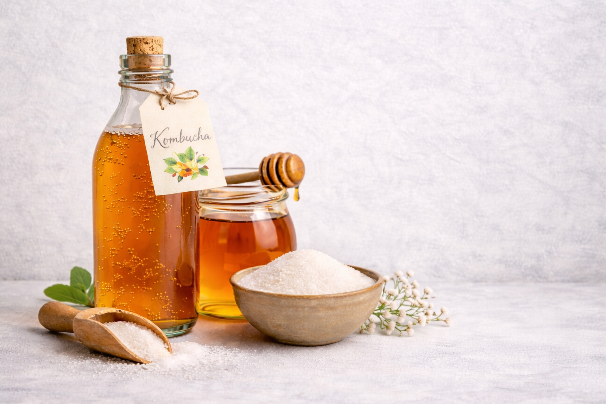
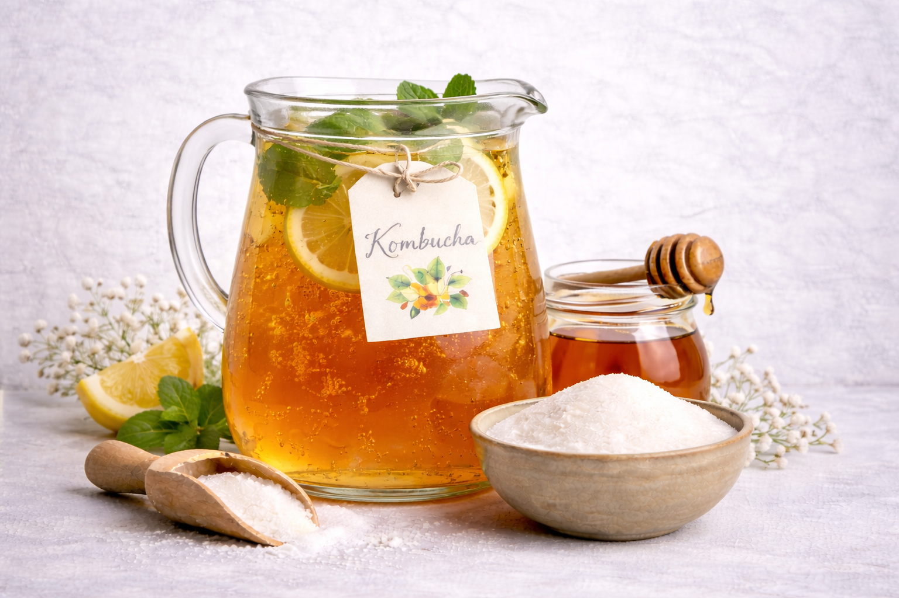

Bioteknologi adalah kegiatan yang memanfaatkan makhluk hidup dalam prosesnya untuk menghasilkan barang atau jasa yang berguna untuk kebutuhan manusia. Ada 2 jenis bioteknologi, bioteknologi konvensional dan juga bioteknologi modern. Bioteknologi konvensional memanfaatkan makhluk hidup/mikroorganisme untuk menghasilkan produk yang dibutuhkan oleh manusia melalui suatu proses yang dinamakan fermentasi dengan manfaat adalah meningkatkan gizi dari banyak produk makanan/minuman, menciptakan makanan baru, makanannya tahan lama, dan dapat meningkatkan perekonomian masyarakat karena tidak membutuhkan banyak biaya pada saat pembuatan. Contohnya adalah tape, tempe, kimchi, yoghurt, bir, wine, kombucha. Sedangkan bioteknologi modern adalah kegiatan yang memanipulasi/merekayasa materi genetik dengan manfaat menghasilkan bibit tanaman yang unggul, meningkatkan produksi bahan pangan, sebagai penanganan polusi serta mengolah limbah, dan untuk menghasilkan produk kesehatan. Contohnya adalah pembuatan hormon insulin sintetik, bayi tabung, tanaman transgenik, dan inseminasi buatan karena semuanya menggunakan makhluk hidup secara tidak langsung.
Dalam kegiatan percobaan membuat produk bioteknologi, salah 1 yang dapat dibuat adalah kombucha. Kombucha adalah minuman fermentasi dari larutan teh manis dengan menggunakan starter mikroba kombucha yang dikenal dengan singkatan SCOBY (Simbiotic Colony Of Bacteria and Yeast). Manfaatnya adalah menjaga keseimbangan mikrobiota usus, meningkatkan penyerapan nutrisi dan meningkatkan sistem kekebalan tubuh dari kandungan probiotiknya, mengandung aktioksidan yang tinggi seperti vitamin C, polifenol, dan senyawa glukoronat, memberikan efek pencegahan kanker, meningkatkan sistem kekebalan tubuh, dan perbaikan pada reumatisme sendi efek antihipertensi, dan antidiabetes. Jenis asam yang dihasilkan adalah asam asetat dan asam glukonat serta vitamin yang dihasilkan adalah vitamin C yang berfungsi untuk meningkatkan sistem kekebalan tubuh dan vitamin B untuk menjaga kesehatan kulit dan sel darah.

1. Panaskan air sebanyak 1.000 ml (1 liter) untuk 1 botol kaca.
2. Seduh teh sebanyak 2 sendok makan.
3. Saring teh dan masukkan ke dalam botol kaca 1.
4. Ulangi pembuatan tehnya dan masukkan teh ke dalam botol kaca ke-2.
5. Masukkan madu sebanyak 6 sendok makan ke dalam botol kaca 1 dan masukkan gula sebanyak 6 sendok makan ke dalam botol kaca ke-2.
6. Tunggu hingga madu dan gula merata.
7. Diamkan di suhu ruang sampai teh tidak terasa panas lagi.
8. Masukkan air starter kombucha yang lalu sebanyak 10%, 100 ml setiap botol.
9. Masukkan SCOBY dan tutup botol kacanya menggunakan kain. Ikatkan karet gelang pada kainnya.
10. Tunggu 7-14 hari, cicipi sampai mencapai rasa yang diinginkan.
9C/16